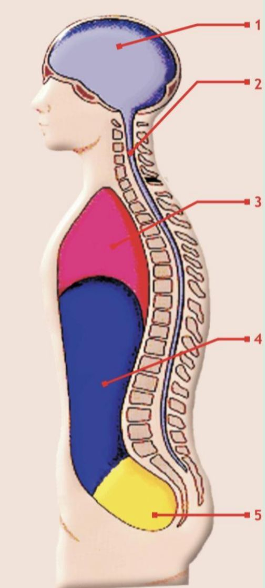

______________________
1. Pada saat terjadinya perang dimana tempat Henry Dunant memberikan pertolongan kepada korban perang?
2. Seseorang yang diminta mendonorkan darah kepada seseorang dan dia tahu kepada siapa darah tersebut akan diberikan merupakan pengertian dari…
3. Perhatikan pernyataan dibawah ini ! 1. A a. Nyeri 2. S b. Suara 3. N c. Tidak Respon 4. T d. Awas Dibawah ini, pasangkanlah singkatan dan keterangan dari ASNT dengan benar ....
4. Perhatikan pernyataan berikut ! 1) Merupakan satu-satunya Perhimpunan Nasional Palang Merah, Bulan Sabit Merah atau Kristal Merah di negaranya. 2) Diakui oleh pemerintah yang sah di negaranya dengan dasar Konvensi Jenewa dan Undang-Undang Nasional. 3) Tidak menerima anggota staf yang memiliki ras, agama, dan pandangan politik yang berbeda-beda 4) Memakai nama dan lambang yang bebas milik organisasi lain 5) Terorganisasi dalam menjalankan tugasnya dan dilaksanakan di seluruh wilayah negaranya Pernyataan diatas yang merupakan syarat diakuinya suatu perhimpunan nasional adalah…
5. Yang merupakan pengertian dari mitigasi yaitu… dan salah satu contoh dari mitigasi adalah….
6. Perhatikan pernyataan di bawah ini! a) Jujur dan bertanggung jawab b) Tidak dibutuhkan kemampuan bersosialisasi c) Kemampuan nyata terukur sesuai sertifikasi d) Tidak dibutuhkan kematangan emosi e) Mempunyai rasa bangga Dari pernyataan diatas, poin mana saja yang merupakan kualifikasi penolong pertama .....
7. Perhimpunan PMI lahir pada tanggal...
8. Perhatikan uraian berikut. 1) Kemanusiaan 6) Keadilan 2) Kedamaian 7) Kesukarelaan 3) Kesamaan 8) Kepemimpinan 4) Kenetralan 9) Kesatuan 5) Kemandiriam 10) Kesemestaan Yang bukan termasuk ke dalam prinsip dasar gerakan palang merah dan bulan sabit merah internasional adalah…
9. PMI atau Palang Merah Indonesia pertama kali diketuai oleh…
10. Ada 4 jenis kebakaran di Indonesia. Yang merupakan pengertian dari kebakaran kelas C adalah…
11. Maksud dari prinsip dasar Kenetralan dalam Gerakan Palang Merah dan Bulan Sabit Merah Internasional adalah…
12. Henry Dunant bersama dengan 4 warga Jenewa mendirikan Komite Internasional Pertolongan Korban Luka (The International Committee of Aid For the Wounded) yang sekarang disebut … pada tahun …
13. Yang merupakan pengertian dari konflik adalah..
14. Perhatikan gambar dibawah !  Dibawah ini, pernyataan yang paling tepat mengenai gambar di samping adalah .....
15. Henry Dunant bersama dengan 4 warga Jenewa mendirikan Komite Internasional Pertolongan Korban Luka (The International Committee of Aid For the Wounded) yang sekarang disebut … pada tahun …
16. Organ yang berfungsi untuk melakukan koordinasi dan kerjasama dengan bagian tubuh disebut dengan…
17. Siapa yang mengajukan usulan untuk mendirikan Perhimpunan Palang Merah Indonesia kepada pemerintah Belanda ?
18. Darah yang dapat dipindahkan adalah darah lengkap dan komponen darah. Komponen darah terdiri dari…
20. Seorang siswa terjatuh dari tangga sekolahnya karena licin. Teman siswa tersebut kebetulan anggota PMR Wira di sekolahnya. Ketika melakukan penilaian, tanda dan gejala yang ditemukan adalah kaki korban nyeri dan kaku, terdengar suara berderik, serta adanya memar. Dari tanda dan gejala tersebut, dapat disimpulkan siswa tersebut mengalami .....
21. Pak Hadi umur 42 tahun, yang memiliki tinggi badan 170 cm, berat badan 76 Kg berapkah IMT dari Pak Hadi….
23. Perhatikan obat-obat berikut. a) Antiperspirant b) Antiretroviral c) Antiaids d) Antiradiasi Yang merupakan obat bagi penderita AIDS adalah…
24. Perhatikan pernyataan berikut ini ! 1) Saat menurunkan tandu lakukan langkah di atas pada urutan selanjutnya 2) Genggamlah pegangan tandu dengan baik 3) Kencangkan otot punggung dan otot perut. Kepala tetap menghadap kedepan dalam posisi netral 4) Punggung harus tetap lurus 5) Pada saat mengangkat punggung harus tetap terkunci sebagai poros dan kekuatan kontraksi otot seluruhnya pada otot tungkai 6) Tempatkan kaki pada jarak yang tepat Urutan yang tepat teknik mengangkat tandu adalah....
25. Kapan lambang Palang Merah di atas dasar putih secara resmi diakui sebagai tanda pengenal pelayanan medis angkatan bersenjata?
26. Lambang memiliki dua fungsi yaitu sebagai…
27. Berdasarkan posisi anatomis, terdapat tiga bidang khayal yang membagi tubuh menjadi 2 bagian yaitu .....
28. Berdasarkan waktunya, bencana dikelompokkan menjadi dua yaitu bencana yang terjadi secara tiba-tiba dan bencana yang terjadi secara perlahan. Banjir merupakan contoh bencana alam yang terjadi secara…
29. Di suatu tempat, sekelompok PMR Wira menemukan korban dengan tanda dan gejala yaitu pernapasannya cepat dan nadi lambat, menggigil / gemetar, pupil mata melebar dan tidak bereaksi, serta kesadarannya menurun. Apakah yang terjadi pada korban jika dihubungkan dengan tanda dan gejala di atas…
30. Yang merupakan penyebab datangnya banjir adalah…
31. Bencana alam yang sering terjadi di wilayah tropis di antara garis balik utara dan Selatan, tetapi tidak terjadi di daerah-daerah yang sangat berdekatan dengan garis khatulistiwa adalah bencana…
32. Suatu zat yang bila masuk dalam tubuh dalam jumlah tertentu dapat menyebabkan reaksi tubuh yang tidak diinginkan bahkan dapat menimbulkan kematian merupakan pengertian dari…
33. Jika ingin mendonorkan darah, calon pendonor darah datang ke UTD PMI. UTD adalah singkatan dari…
34. Tingkat status awas pada gunung api di Indonesia artinya…
35. Salah satu fungsi darah adalah…
36. Keadaan bebas dari kotoran, termasuk diantaranya debu, sampah, dan bau merupakan pengertian dari….
37. Pada tanggal 5 September 1945 dibentuklah susunan kepanitiaan beranggotakan 5 orang dengan nama Panitia Lima yang diketuai oleh…
38. Telah terjadi kebakaran di sebuah sekolah pada siang hari. Kebakaran disebabkan karena meledaknya sebuah gas di kantin sekolah. Salah satu korbannya adalah penjual yang gas nya meledak. Penjual tersebut mengalami luka bakar di daerah punggung, kedua tangan bagian belakang dan kedua kaki bagian belakang. Berapa persenkah luas daerah yang terbakar pada penjual tersebut ....
39. Zat gizi yang mengandung nutrisi tinggi adalah…
40. Pergerakan kerak bumi yang terjadi sejak jutaan tahun yang lalu menyebabkan terjadinya…
41. Keluarga yang berperilaku gizi seimbang, mampu mengenali dan mengatasi masalah gizi anggota keluarganya disebut dengan……
42. Apa nama buku yang ditulis Henry Dunant tentang pengalamannya selama perang di Solferino?
43. Bencana longsor yang terjadi jika tanah dan batuan bergerak pada permukaan landai yang rata atau bergelombang yang disebut bidang gelincir merupakan pengertian dari…
44. Zat gizi yang mengandung nutrisi tinggi yang terdapat dalam beras, jagung, kentang, ubi dan singkong merupakan sumber zat gizi…..
45. Beberapa bentuk ketidakadilan gender antara lain…
46. Apa yang dimaksud dengan pemimpin ?
47. Perhatikan pernyataan berikut ! 1) Kenali diri sendiri. 2) Kenali orang lain 3) Menyela pembicaraan 4) Memberi pernyataan yang jelas. 5) Memberi umpan balik 6) Mengurung diri
48. Yang bukan merupakan hal-hal yang mendukung komunikasi adalah…
49. Berikut yang merupakan pengertian transfusi darah adalah…
50. Salah satu syarat yang tepat bagi calon pendonor darah adalah…